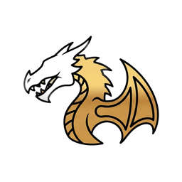

SkyManager
Size
Saved with the deck, per tab
Open key
Quick-fire — hold a modifier + the open key (skips the menu)
Shift +
Ctrl +
Alt +
Menu scale
100%
Scroll speed
100%
Each physical key fires its mapped key — bindable in any mod's MCM.
raw sends the true extended code instead (SKSE listeners; MCM shows blank key art).
No hotkeys yet
Press Edit, then Add hotkey to create your first one.
Search everything
CtrlF
Open key
This key opens SkyManager anywhere in the game.
F7
Systems
Pick a card — or search above
Since the game started — not saved across restarts.
Nothing fired yet
Press a hotkey and it shows up here — the deck's own rows, numpad chords and quick-fires alike.
Auto-saves as you type · plain text · seeded from keybindings.md
Open key
Deep-opens this tab · default F14
Faces
40
Tab
100%
Icons
100%
Look at an NPC before opening the deck to add them to a category.
Domains key
Opens the deck straight onto this tab · default F15
(through the F13–F24 bridge) · menu size lives in the deck's Edit settings
Press the new Domains key…
Keyboard key, F13–F24, or mouse (middle / Mouse 4 / Mouse 5) · Esc cancels
Containers key
Opens the deck straight onto this tab · default F16
(through the F13–F24 bridge) · menu size lives in the deck's Edit settings
Press the new Containers key…
Keyboard key, F13–F24, or mouse (middle / Mouse 4 / Mouse 5) · Esc cancels
Tuning
Valuable gear bar
—
Not in a scene
Start an OStim scene, then pick from the list to change it.
—
Furniture
—
ZaZ Animation Pack
Whoever you were looking at when the deck opened — or you, if nothing.
—
Key Census
Scanning…
Item Explorer
🜚 …
NPC Finder
👤 portraits off
Cell Finder
interiors · outdoors · map markers
Spell Finder
Distributions
Settlement
High King
Wigs
Transmog
◇ your gear only · stats stay, looks change
NIGHTSIDE
Nothing has its teeth in you
No vampirism, no lycanthropy, no lichdom. This page keeps
itself out of the way until one of them takes — then its lane appears here.
Mounts
🐴 previews off
Add a summon spell
rideable summons float to the top
✕
Follower Loadouts
no NFF
…
Race—
Class
Alignment
Level
—
Active Effects
Skills 18
Pack Check0 potions
Your Story saved ✓
—:—
reading the sky…
Sky
reading the sky…
⌕
Choose a duration, review the arrival date, then confirm. Waiting is unavailable in combat.
Stays open · game runs live on this tab · toggle modifiers, then click keys · Esc and Tab are left out — the deck itself owns them while it is open
Gold
0 g
Monthly net
0 g
Debt
0 g
Tab size
100%
Scales this tab's text and controls, 60%–160%. Saved with the deck.
In this wardrobe 0
Nothing here yet — click outfits on the right to add them.
All outfits
NPC
Outfit
Choose
Press a key or mouse button…
Held Shift / Ctrl / Alt are captured as modifiers · for a trigger, hold ANY key and press another to make a chord (Q + 1) · mouse: middle, Mouse 4, Mouse 5 · Esc cancels